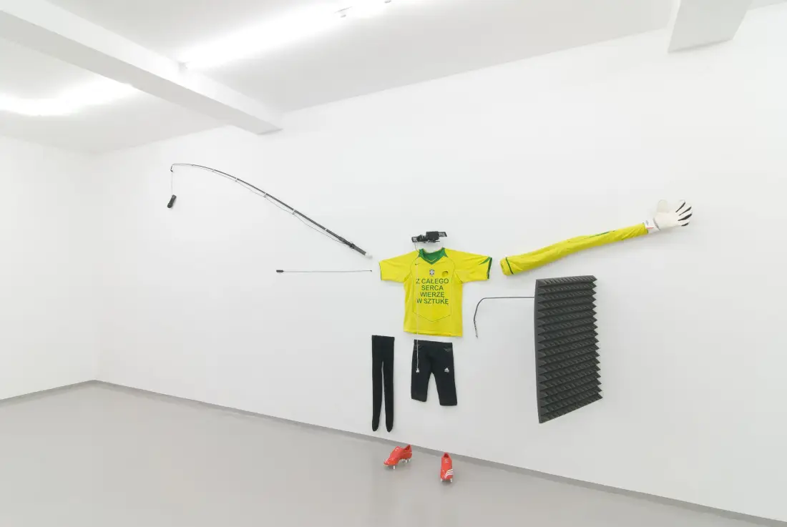

overcoming bias
I am sure I suffer from many, especially the mother of all, my-side bias. So pleassssse send feedback.
~*~ hi, i'm ~*~
Paweł Sysiak. pav for short.
designer. writer. art background. interested in almost anything.
psst. wiggle your mouse or finger. click the big name.
My name is Paweł, or pav for short. I learn, write, and am scheming how to improve epistemics and collective coordination using technology. I am currently working at Softmax. I do UI / UX design, wrote AI Revolution 101 and have a background in art. I grew up in Poland and live between the US and EU.
Product design for AI systems.
softmax.comRebuilt the design system at Plume and shaped products reaching 1B+ devices. Also BlackRock.
see the design workIn 2016 I squeezed Tim Urban's two-part Wait But Why essay to a third of its length, with their approval, and added new animations. A 35 minute read that reached 160k+ people.
read itMy personal wiki, live since January 2020. I try to distill the most impactful knowledge: cognitive biases, mental models, well-being, collective coordination.
get lost in itLed user research on AI alignment tooling at AI Objectives Institute. Built coordination systems for collective decision-making with Plurality Institute.
case studyA serious movie about problems and solutions. A co-created 12 minute film on the art world, global culture and metaphysics. Went viral in the art corner of the internet. 35k+ views.
watch itAn internet art project I led, exploring how art can exist online. Exhibitions, events, trips, screenings, memes.
visit BillyAn iOS timer that burns your money if you leave the app. Stay focused or pay up.
see the projectEvery subscription, free or paid, feels v meaningful.
subscribeI worked as an artist creating sculptures, installations, and conceptual art. Some of my work lives in the collection of the Museum of Modern Art in Warsaw. I showed in Warsaw, Beirut, Ljubljana and Prague.



I am sure I suffer from many, especially the mother of all, my-side bias. So pleassssse send feedback.
I want to be what loves becoming, what laughs, friends and has fun.
"I am sorry that I didn't have time to write a shorter letter." Pascal said it. I try to distill knowledge into as few words as possible.
A Polish expression: say it in the simplest possible terms. "If you can't explain it simply you don't understand it well enough." That is Richard Feynman's learning method.
I will prioritize precision over persuasion.
I try to resist the new and select the knowledge that has a long expiry date.
I feel the most meaning when I am in the process, however wiggly, of attempting to create the most positive impact.
It's tough to "succeed" as a generalist. It's also the most fun.